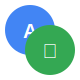

🏠 الرئيسية
⚙️ الإعدادات

الترجمة الثنائية
🌙
🤝 وجهاً لوجه
🌐 عن بُعد
اللغة الأولى
🔍 اكتشاف تلقائي
🇸🇦 العربية
🇺🇸 الإنجليزية
🇫🇷 الفرنسية
🇪🇸 الإسبانية
🇩🇪 الألمانية
🇮🇹 الإيطالية
🇵🇹 البرتغالية
🇷🇺 الروسية
🇯🇵 اليابانية
🇰🇷 الكورية
🇨🇳 الصينية
🇮🇳 الهندية
🇹🇷 التركية
🇳🇱 الهولندية
🇸🇪 السويدية
🇩🇰 الدنماركية
🇳🇴 النرويجية
🇫🇮 الفنلندية
🇵🇱 البولندية
🇨🇿 التشيكية
🇭🇺 المجرية
🇷🇴 الرومانية
🇧🇬 البلغارية
🇭🇷 الكرواتية
🇸🇰 السلوفاكية
🇸🇮 السلوفينية
🇪🇪 الإستونية
🇱🇻 اللاتفية
🇱🇹 الليتوانية
🇺🇦 الأوكرانية
🇧🇾 البيلاروسية
🇲🇰 المقدونية
🇦🇱 الألبانية
🇷🇸 الصربية
🇧🇦 البوسنية
🇲🇪 الجبل الأسود
🇮🇸 الآيسلندية
🇲🇹 المالطية
🏴 الويلزية
🇮🇪 الأيرلندية
🏴 الباسكية
🏴 الكاتالانية
🏴 الجاليكية
🇹🇭 التايلاندية
🇻🇳 الفيتنامية
🇮🇩 الإندونيسية
🇲🇾 الماليزية
🇵🇭 الفلبينية
🇰🇪 السواحيلية
🇪🇹 الأمهرية
🇮🇱 العبرية
🇮🇷 الفارسية
🇵🇰 الأردية
🇧🇩 البنغالية
🇱🇰 التاميلية
🇮🇳 التيلوغو
🇮🇳 الكانادا
🇮🇳 المالايالام
🇮🇳 الغوجاراتية
🇮🇳 البنجابية
🇳🇵 النيبالية
🇱🇰 السنهالية
🇲🇲 البورمية
🇰🇭 الخمير
🇱🇦 اللاوية
🇬🇪 الجورجية
🇦🇲 الأرمنية
🇦🇿 الأذربيجانية
🇰🇿 الكازاخستانية
🇰🇬 القيرغيزية
🇺🇿 الأوزبكية
🇹🇲 التركمانية
🇹🇯 الطاجيكية
🇲🇳 المنغولية
اكتشاف تلقائي
⇄
اللغة الثانية
🇸🇦 العربية
🇺🇸 الإنجليزية
🇫🇷 الفرنسية
🇪🇸 الإسبانية
🇩🇪 الألمانية
🇮🇹 الإيطالية
🇵🇹 البرتغالية
🇷🇺 الروسية
🇯🇵 اليابانية
🇰🇷 الكورية
🇨🇳 الصينية
🇮🇳 الهندية
🇹🇷 التركية
🇳🇱 الهولندية
🇸🇪 السويدية
🇩🇰 الدنماركية
🇳🇴 النرويجية
🇫🇮 الفنلندية
🇵🇱 البولندية
🇨🇿 التشيكية
🇭🇺 المجرية
🇷🇴 الرومانية
🇧🇬 البلغارية
🇭🇷 الكرواتية
🇸🇰 السلوفاكية
🇸🇮 السلوفينية
🇪🇪 الإستونية
🇱🇻 اللاتفية
🇱🇹 الليتوانية
🇺🇦 الأوكرانية
🇧🇾 البيلاروسية
🇲🇰 المقدونية
🇦🇱 الألبانية
🇷🇸 الصربية
🇧🇦 البوسنية
🇲🇪 الجبل الأسود
🇮🇸 الآيسلندية
🇲🇹 المالطية
🏴 الويلزية
🇮🇪 الأيرلندية
🏴 الباسكية
🏴 الكاتالانية
🏴 الجاليكية
🇹🇭 التايلاندية
🇻🇳 الفيتنامية
🇮🇩 الإندونيسية
🇲🇾 الماليزية
🇵🇭 الفلبينية
🇰🇪 السواحيلية
🇪🇹 الأمهرية
🇮🇱 العبرية
🇮🇷 الفارسية
🇵🇰 الأردية
🇧🇩 البنغالية
🇱🇰 التاميلية
🇮🇳 التيلوغو
🇮🇳 الكانادا
🇮🇳 المالايالام
🇮🇳 الغوجاراتية
🇮🇳 البنجابية
🇳🇵 النيبالية
🇱🇰 السنهالية
🇲🇲 البورمية
🇰🇭 الخمير
🇱🇦 اللاوية
🇬🇪 الجورجية
🇦🇲 الأرمنية
🇦🇿 الأذربيجانية
🇰🇿 الكازاخستانية
🇰🇬 القيرغيزية
🇺🇿 الأوزبكية
🇹🇲 التركمانية
🇹🇯 الطاجيكية
🇲🇳 المنغولية
👤 المتحدث الأول
جاهز للتحدث
🔴 جاري التسجيل
🎤
تحدث
📤
إرسال
🔊
استماع
👤 المتحدث الثاني
جاهز للتحدث
🔴 جاري التسجيل
🔊 جاري القراءة...
🎤
تحدث
📤
إرسال
🔊
استماع
غير متصل
انضمام للغرفة
إنشاء غرفة جديدة
🔄 إعادة الاتصال
💬 المحادثة المترجمة
🔊
🗣️
⚡
🔊 جاري القراءة...
0 مشارك
🎤
➤